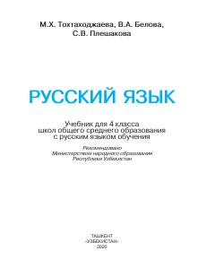

РЯRus tilida o'qitiladigan maktablarning 4-sinfi uchun rus tili darsligi.
Mazkur darslik rus tilida o'qitiladigan umumiy o'rta ta'lim maktablarining 4-sinfi uchun mo'ljallangan bo'lib, o'quvchilarning og'zaki va yozma nutq ko'nikmalarini rivojlantirishga qaratilgan. Kitobda tilshunoslikning boshlang'ich qoidalari, matn ustida ishlash mashqlari va lug'at boyligini oshiruvchi topshiriqlar berilgan.